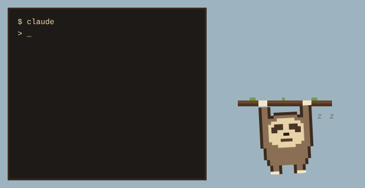

LENKOЛЕНКО
Um companheiro 8-bit que avisa quando a sua IA de código terminou o trabalho.

Como instalar
- Baixe o instalador do seu sistema.
- Instale e abra. A preguiça aparece no canto inferior direito da tela.
Windows: enquanto o instalador não tiver assinatura digital, o SmartScreen pode mostrar “O Windows protegeu o computador”. Clique em Mais informações → Executar assim mesmo.
macOS: se o sistema bloquear a abertura, vá em Ajustes do Sistema → Privacidade e Segurança e clique em Abrir Mesmo Assim.
Linux: o
.AppImageroda em qualquer distribuição. Dê permissão de execução comchmod +x LENKO_*.AppImagee abra. - Conecte. No balão “Quer que eu me conecte ao Claude Code?”, clique em Conectar e reinicie o Claude Code.
O LENKO se atualiza sozinho: quando sai uma versão nova, a preguiça avisa no balão e só instala quando você clica em Atualizar.